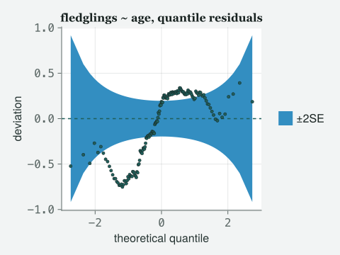
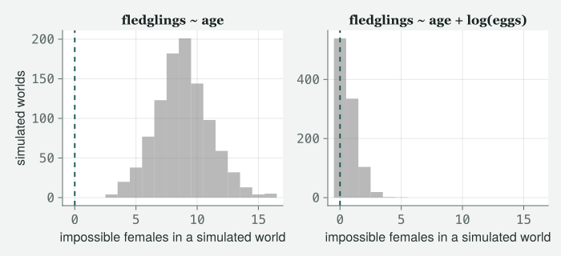
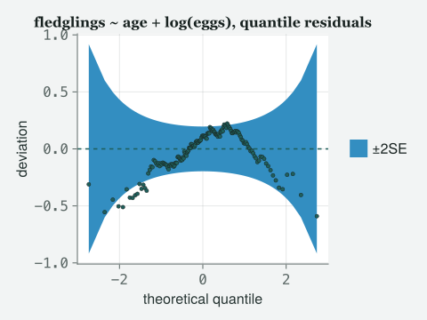
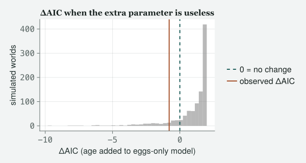

A residual plot tells you whether the model is embarrassed by the data you have. Simulating from the model tells you what the model believes about data you have not seen, and that is where the embarrassing beliefs live.
Draft
Draft. Every number and figure on this page was produced when the site was built.
Engines DRM.jl 0.7.1 at 26f4c4ddc (Julia 1.10.0) · drmTMB 0.7.0 (R 4.6.0) Provenance Every code block and printed result below was actually run when the site was built, and nothing is typed from memory. Every random draw is seeded where it is made, so the page comes out the same every time. Caveat The data are real: the 2012 Lundy Island sparrow and female records, read directly from data/2012/MBodySize.csv and data/2012/FemaleSuccess.csv (where the files came from is recorded in data/2012/README.md). Nothing here is invented; the simulated quantities are drawn from models fitted to those files, from stated seeds.
Objectives
By the end of this class you should be able to:
Say what a response, a Pearson and a randomised quantile residual each divide by, why all three coincide in a Gaussian model, and why only the third can be judged against the same picture in every family.
Read a worm plot: say what is on each axis, what a correct model looks like, and what the envelope drawn round it does and does not promise.
Calibrate a diagnostic by simulating its own null rather than by eye, and say how many points outside an envelope is a lot.
Check a model by simulating from it: draw new data with an explicit generator, recompute a statistic you care about, and place the observed value in the simulated distribution.
Compare two nested models with AIC and with a likelihood-ratio test, say what a difference of a few AIC units is and is not evidence of, and name what no comparison can check for you.
The class
Itchy’s office, Friday, and there are two laptops open on the desk
instead of one. TOTO has the sparrow model from Class 2 and a printed
page of coefficients he is rather pleased with. MOMO has her fledgling
counts, the ones the family lied about, and the expression of somebody
who has stopped trusting output. EDDIE has come for the last twenty
minutes and will ask the question the first forty are for.
Itchy
Four classes in, you can fit almost anything. Nobody has yet asked me
the only question a referee will ask, which is whether the thing you
fitted is any good. Today is that question, and it is a service class:
no new rung, no new constant freed, just the machinery you will use in
every chapter after this.
Momo
In SPSS I would have clicked “save residuals” and plotted them.
Itchy
And in a Gaussian model you would have been right, which is the trap.
Load both files.
# tools/figures.jl includes tools/theme_itchy.jl itself, so one include does both.include("../tools/figures.jl")usingDRM, DataFrames, CSV, Statistics, Random, Printf, CairoMakieimportDistributions# qualified: DRM exports its own Poisson, Binomial, …set_theme!(theme_itchy(:light))raw = CSV.read("../data/2012/MBodySize.csv", DataFrame)raw.Sex =ifelse.(raw.Sex .=="F", "female", "male")sparrows =select(raw, :BirdID, :Sex, :Tarsus, :Wing)females = CSV.read("../data/2012/FemaleSuccess.csv", DataFrame)n_sp =nrow(sparrows)n_fem =nrow(females)@printf("sparrows: %d rows females: %d rows\n", n_sp, n_fem)
sparrows: 171 rows females: 163 rows
Three residuals, and why you were only taught one
Itchy
Toto’s model first, because it is the one where nothing goes wrong.
residual SD, response scale : 1.4173 mm
fitted sigma : 1.4132 mm
Pearson residual SD : 1.0029
quantile residual SD : 1.0029
largest |Pearson - quantile|: 2.620e-14
Itchy
Three names, three definitions, one vector. The
response residual is observed minus fitted, in
millimetres. The Pearson residual divides that by the
standard deviation the family decrees for that row — here σ, the same
1.413 mm for every bird, so it is just a change of units. The
randomised quantile residual asks the fitted model what
probability it puts below the value you actually saw and maps that
probability through a normal.
Toto
And the last two are the same number.
Itchy
To 3e-14 millimetres, which is arithmetic noise and not a coincidence.
In a Gaussian model the response is normal by assumption, so mapping it
into a normal and back does nothing at all. In the one model
everybody is taught, all three residuals are the same object.
That is exactly why “the residual” feels like one word, and it is why
the habits you brought from that model do not survive contact with a
count.
Momo
So do it to mine.
Itchy
Same three definitions, and this time write out what each one divides
by, because the family has an opinion now. The engine does not offer a
Pearson residual, and that is no loss: writing (y − μ̂)/√V(μ̂) yourself
forces you to say which variance function the family decreed, which is
Class 3’s whole lesson turned into arithmetic.
pois =drm(bf(@formula(Fledglings ~ Age)), Poisson(); data = females)mu_p =fitted(pois)r_response =residuals(pois; type=:response)# Poisson decrees Var(y) = mu, so the Pearson divisor is sqrt(mu), row by row.r_pearson = r_response ./sqrt.(mu_p)r_quantile =residuals(pois; type=:quantile, rng =MersenneTwister(1))for (nm, r) in (("response", r_response), ("Pearson", r_pearson), ("quantile", r_quantile)) skew =mean(((r .-mean(r)) ./std(r)) .^3)@printf("%-9s : SD %.4f skew %+.4f distinct values %3d\n", nm, std(r), skew, length(unique(round.(r, digits =8))))end@printf("fitted counts run from %.4f to %.4f\n", extrema(mu_p)...)
The first two take only 32 different values each and the third takes
163.
Itchy
Which is 163, one per female, and that is the whole point. A count is a
whole number, so observed minus fitted lands on a lattice: at a given
fitted value there are only so many residuals available. Dividing by the
square root of the mean rescales the lattice; it does not dissolve it.
Look at all three.
Figure 1: The same fit, three definitions of ‘residual’. Response and Pearson residuals fall on stripes, because a count can only miss its mean by a whole number; only the randomised quantile residual has a continuous distribution that a normal reference can be laid against.
Toto
All three are four columns, because age only takes four values. But the
first two columns are a few dots stacked with gaps between them, and the
third is filled in.
Itchy
That is the right way to look at it, and it is not the columns that
matter — those are the four ages. It is what is inside a column. The
first two are stripes and there is nothing wrong with them; they are
telling you the truth about a discrete response. What they cannot do is
be compared with a normal distribution, because they are not one and
never will be, however right the model is. Notice also that the response
residuals have a floor that moves: a female cannot
fledge fewer than none, so her residual cannot be more negative than
minus her own fitted value, and the most negative one in this file is
-4.073.
Momo
So the third one is the one I plot.
Itchy
The third one is the one you plot, in every family in this book.
Randomised quantile residuals are Dunn and Smyth’s idea
(1996) and the sentence that makes them work is short: if the model is
right, the probability it assigns below your observation is uniform, and
a uniform pushed through the inverse normal is standard normal. Whatever
the family. For a discrete response the probability is not a single
number but an interval, so you draw uniformly inside it — hence
randomised, hence a generator, hence a seed, every single time.
The picture, and what its envelope promises
Itchy
Now the plot. It is the one fig_diagnostic draws, and
before anybody looks at it I am going to tell you what is on the axes,
because the commonest failure in this room is reading a picture whose
meaning you have assumed.
# The arithmetic fig_diagnostic draws, exposed so the picture can be counted.functionworm_parts(r) n =length(r) obs =sort(r) p = ((1:n) .-0.5) ./ n theo =sqrt(2) .*erfinv_approx.(2.* p .-1) # normal quantiles dens = x ->exp(-x^2/2) /sqrt(2π) se =sqrt.(p .* (1.- p) ./ n) ./dens.(theo) # SE of the ith order statistic (; theo, dev = obs .- theo, se)endn_outside(r) = (w =worm_parts(r); count(abs.(w.dev) .>2.* w.se))n_below(r) = (w =worm_parts(r); count(w.dev .<-2.* w.se)) # and above = outside - below
Itchy
The horizontal axis is the quantile a standard normal would have put at
that rank. The vertical axis is the deviation from it —
sorted residual minus expected quantile. So a correct model does not
give you a diagonal line. It gives you a flat line at
zero. This is a detrended quantile plot, a worm plot, and van
Buuren and Fredriks (2001) named it that because a wrong model makes it
wriggle. The band is a pointwise two-standard-error envelope on each
order statistic under normality.
Toto
So five per cent of the points should fall outside it.
Itchy
That is the sentence I want to kill. Draw it first, then we will find
out.
out_p =n_outside(r_quantile)@printf("quantile residual SD : %.4f\n", std(r_quantile))@printf("points outside the +/-2SE envelope : %d of %d (%d below the band, %d above)\n", out_p, n_fem, n_below(r_quantile), out_p -n_below(r_quantile))fig_diagnostic(r_quantile; title ="fledglings ~ age, quantile residuals")
quantile residual SD : 1.3067
points outside the +/-2SE envelope : 107 of 163 (49 below the band, 58 above)

Figure 2: Worm plot of the fledgling-count model’s randomised quantile residuals, at randomisation seed 1. The vertical axis is deviation from the normal quantile, so a correct model gives a flat line at zero inside the band. This one leaves the band at both ends — below it at the low ranks and above it at the high ranks — and that pair of opposite-sign excursions is what a residual spread wider than one looks like: the worm tilts.
Momo
107 out of 163 are outside. That is more than half.
Itchy
It is, and Toto has told you it should be about five per cent, and I
have told you not to believe him, and neither of us has done anything
but assert. The envelope is pointwise: each ribbon is
drawn at two standard errors, so the rate per point really is
the normal’s own two-sigma tail and Toto has not invented it. Two things
break the step from that rate to a count. The points are the
same residuals sorted from smallest to largest, one per rank, so they
are heavily correlated: when the curve drifts it drifts together and
dozens cross at once. And these residuals are not a fresh normal sample:
they came out of a model fitted to these very data,
which is the caveat Dunn and Smyth put in their own abstract — normal
apart from the sampling variability in the estimated parameters.
Simulate both nulls and find out which one this picture belongs to.
# TWO nulls: (a) plain standard normal samples, no model anywhere;# (b) simulate from the fit, REFIT the same formula, recompute the residuals, count.functionnull_counters(fit, refit, ndraw, rng) y =simulate(fit; nsim = ndraw, rng = rng) outs =Int[]; sds =Float64[]for k in1:ndraw r =residuals(refit(y[:, k]); type=:quantile, rng = rng)push!(outs, n_outside(r)); push!(sds, std(r))end (; outs, sds)endrefit_age(y) =drm(bf(@formula(Fledglings ~ Age)), Poisson(); data =DataFrame(Fledglings = y, Age = females.Age))rng_naive =MersenneTwister(10)naive_out = [n_outside(randn(rng_naive, n_fem)) for _ in1:2000]rng_null =MersenneTwister(11)nullp =null_counters(pois, refit_age, 2000, rng_null)null_out = nullp.outsq95 =quantile(null_out, 0.95)@printf("(a) normal samples, no fit : median %.0f, mean %.2f, 95th pct %.0f (%.0f%% of %d)\n",median(naive_out), mean(naive_out), quantile(naive_out, 0.95),100*quantile(naive_out, 0.95) / n_fem, n_fem)@printf(" the pointwise two-sigma rate alone predicts a mean of %.2f\n",2* Distributions.cdf(Distributions.Normal(), -2) * n_fem)@printf("(b) simulate -> refit -> residuals, outside : median %.0f, mean %.2f, 95th pct %.0f\n",median(null_out), mean(null_out), q95)@printf("(b) residual SD of a correct fitted model : mean %.4f, SD %.4f\n",mean(nullp.sds), std(nullp.sds))@printf("draws of %d with at least %d points outside : %d of %d\n", n_fem, out_p, count(null_out .>= out_p), length(null_out))
(a) normal samples, no fit : median 1, mean 7.15, 95th pct 37 (23% of 163)
the pointwise two-sigma rate alone predicts a mean of 7.42
(b) simulate -> refit -> residuals, outside : median 0, mean 1.24, 95th pct 7
(b) residual SD of a correct fitted model : mean 0.9971, SD 0.0546
draws of 163 with at least 107 points outside : 0 of 2000
Figure 3: The two null distributions for the same count — points outside the worm plot’s ±2SE envelope, over 2000 simulated worlds each. Each panel keeps its own x-scale, on purpose: on one shared axis the correct null would be squashed flat against the naive one’s much longer tail, so read the axes first — one runs out past a hundred, the other stops well short of it. The dashed line in each panel is that null’s own 95th percentile; the ratio of the two is the fivefold gap the prose names.
Itchy
Two nulls, and the gap between them is the lesson. Take the wrong one
first, because it is the one everybody’s intuition draws. Plain normal
samples, no model anywhere: the median count outside is 1, the mean is
7.15 against the 7.42 the pointwise rate predicts — so Toto was very
nearly right on average, and useless about any one picture — and the
ninety-fifth percentile is 37, 23% of the sample. That skew is
the correlation made countable: the whole worm is free to sit above or
below zero, and when it does, everything crosses at once.
Itchy
Now the null that applies to the picture on the screen. Fit the model to
each invented world and that freedom disappears, because the intercept
is estimated from the very numbers it is then judged against — the worm
is pinned through the middle by construction. The median is 0, the mean
1.24, the ninety-fifth percentile 7. A correct model, fitted,
puts almost nothing outside this band. The null everybody draws
is too generous by a factor of about five, because it answers a
different question: it calibrates a picture of data, and this
is a picture of a fit.
Toto
Then most of the worm plots I have squinted at were not fine.
Itchy
Most of them were not, and you had no way of knowing which. Which is why
the verdict on Momo’s plot is not “it looks bad”. It is that 107 points
outside turned up in 0 of 2000 correct-model draws — and none is not
never: with two thousand draws and no hits the most you may say is
“smaller than about three in two thousand”.
Momo
And the spread of the residuals is 1.307 when it should be one.
Itchy
And the same two thousand draws say a correct model’s residual SD
wanders only about 0.055 either side of one, so that is far out. Now do
not make the mistake I have watched a hundred people make and count the
spread, the count outside and the tilt as three pieces of evidence. One
thing is wrong with these residuals, they are too widely spread; the
tilt, the two opposite-sign excursions and the count outside are that
one thing seen three ways. But there is one more thing to check before
you believe any of them, and it is the thing almost nobody checks.
Toto
The seed.
Itchy
The seed. You handed a random generator to a residual function. Change
the seed and you get a different residual vector from the same fit. If
the verdict moves with the seed, the verdict is about your seed.
sds =Float64[]outs =Int[]for k in1:200 r =residuals(pois; type=:quantile, rng =MersenneTwister(k))push!(sds, std(r))push!(outs, n_outside(r))end@printf("over 200 randomisation seeds: SD mean %.4f (SD %.4f), range %.4f to %.4f\n",mean(sds), std(sds), minimum(sds), maximum(sds))@printf("over 200 randomisation seeds: points outside, min %d, mean %.1f, max %d\n",minimum(outs), mean(outs), maximum(outs))@printf("seeds landing inside the correct-model 95th percentile (%d): %d of 200\n",round(Int, q95), count(outs .<= q95))
over 200 randomisation seeds: SD mean 1.3043 (SD 0.0238), range 1.2575 to 1.3935
over 200 randomisation seeds: points outside, min 78, mean 98.9, max 119
seeds landing inside the correct-model 95th percentile (7): 0 of 200
Itchy
The residual SD wanders between 1.257 and 1.393 across seeds, so quoting
it to three decimals from one seed would be a lie of precision. The
count outside wanders between 78 and 119, and not one of the two
hundred seeds landed inside the envelope-count a correct model
reaches nineteen times in twenty. The verdict is seed-proof; the digits
are not. Report the range, or report one seed and say which.
Ask the model what it believes
Itchy
Now the part I actually brought you here for, and Eddie has arrived at
the right moment. Everything so far has been the model marking its own
homework: residuals are computed inside the fit. Eddie.
Eddie
So how do I catch it believing something absurd, rather than fitting
badly?
Itchy
You make it invent a world and you look at the world. That is the whole
idea. Simulate from the fitted model with an explicit generator,
recompute a statistic you care about, and see where the observed value
falls in the simulated pile. The recipe is three lines and it
works for every model in this book. The art is entirely in choosing the
statistic, so choose one that is a question about your animal.
Momo
Then I will use the one I already know the answer to, to see whether the
recipe finds it. Is it inventing females who fledge more chicks than
they laid eggs?
Itchy
Testing a new tool on a case you have already settled is exactly the
right instinct, and it is a superb statistic besides: it is checkable in
the world, and the model has never been told it is impossible. Your file
has the eggs in the second column, and the model has never seen that
column.
n_egg_col =count(females.Fledglings .> females.EggNo)rng_sim =MersenneTwister(20260907)ysim =simulate(pois; nsim =1000, rng = rng_sim)imposs = [count(ysim[:, k] .> females.EggNo) for k in1:size(ysim, 2)]@printf("observed females fledging more chicks than eggs laid : %d of %d\n", n_egg_col, n_fem)@printf("simulated worlds, count of such females: mean %.2f, min %d, max %d\n",mean(imposs), minimum(imposs), maximum(imposs))@printf("proportion of simulated worlds at or below the observed count : %.4f\n",mean(imposs .<= n_egg_col))
observed females fledging more chicks than eggs laid : 0 of 163
simulated worlds, count of such females: mean 8.83, min 3, max 16
proportion of simulated worlds at or below the observed count : 0.0000
Momo
Not one of the thousand.
Itchy
Not one. The fittest world the model can imagine still has 3 females
raising more chicks than they laid eggs, and it averages 8.8. The real
file has 0, because it cannot have any. This is Class 3’s beat
arriving by a different road. There we caught a model believing
in a probability above one by looking at
extrema(fitted(fit)); here the impossibility is not in the
fitted mean at all, it is in the spread the family decreed round it, and
no summary of the coefficients would ever have shown you. You had to
make the model invent birds.
Momo
This is last week. I convicted this model in Class 4 and I put
log(EggNo) in the mean to fix it.
Itchy
You did, and Class 4 owns that repair. What is new today is the
route: Class 4’s arithmetic on the Poisson’s tail works
only because that tail has a formula; inventing a thousand worlds and
counting works for any statistic — a maximum, a number of ties, a
longest run.
Eddie
So why refit it here at all?
Itchy
Because the model I want to interrogate for the rest of this class is
the repaired one, and because you should never take a fit on trust from
a previous chapter. Same formula as Class 4, refitted here, printed
here.
females.logEgg =log.(females.EggNo)pois2 =drm(bf(@formula(Fledglings ~ Age + logEgg)), Poisson(); data = females)pois2
Distributional regression fit (Poisson)
nobs = 163 logLik = -323.4104 converged = true
Mean model (μ):
H0: coefficient = 0
Coef. Std.Error z Pr(>|z|)
(Intercept) -1.1695 0.2546 -4.5931 4.366e-06
Age 0.0852 0.0507 1.6798 0.09299
logEgg 0.9503 0.1102 8.6213 6.622e-18
Class 4’s numbers to the last digit. The coefficient on log-eggs is
0.95, interval 0.734 to 1.166, covering one, the value an offset would
have pinned it at; the engine cannot write an offset (see Where the engine stops), so the
coefficient is fitted free. Today’s question is Eddie’s: is the
repaired model any good? Run Momo’s check again on it, and
change nothing else.
rng_sim2 =MersenneTwister(20260907)ysim2 =simulate(pois2; nsim =1000, rng = rng_sim2)imposs2 = [count(ysim2[:, k] .> females.EggNo) for k in1:size(ysim2, 2)]@printf("with eggs laid in the model: mean %.2f, min %d, max %d\n",mean(imposs2), minimum(imposs2), maximum(imposs2))@printf("proportion of simulated worlds at or below the observed count : %.4f\n",mean(imposs2 .<= n_egg_col))fig =Figure(size = (700, 320))for (j, (nm, v)) inenumerate((("fledglings ~ age", imposs), ("fledglings ~ age + log(eggs)", imposs2))) ax =Axis(fig[1, j]; xlabel ="impossible females in a simulated world", ylabel = j ==1 ? "simulated worlds":"", title = nm)hist!(ax, v; bins =-0.5:1:16.5, color = (:grey, 0.55))vlines!(ax, [n_egg_col]; linestyle =:dash, linewidth =2)xlims!(ax, -1, 17)endfig
with eggs laid in the model: mean 0.61, min 0, max 5
proportion of simulated worlds at or below the observed count : 0.5390

Figure 4: Simulation-based check. Each histogram is 1000 worlds drawn from a fitted model; the bar counts how many females in that world fledged more chicks than they laid eggs. The dashed line is the real file, which has none. The age-only model cannot imagine a world as tidy as the real one; the model with eggs laid in it can.
Momo
The second one sits on top of the real answer.
Itchy
54% of its worlds are at least as tidy as the real file, which is as
consistent as a check can be. Note carefully what that does
not say. It does not say the model is true. A check you
pass tells you the model is not embarrassed by that statistic;
it is silent about every statistic you did not compute. Passing checks
is not evidence in the way failing them is.
Eddie
Can I use any statistic?
Itchy
Any statistic, and here is a second one from the same simulated
matrices, so you can see the recipe is general. The classic is the
Pearson chi-squared over its degrees of freedom, which is one when the
family’s variance decree is met. One rule: refit each invented world
before you score it, so the null spends the same parameters the observed
statistic spent.
x2_over_df(y, f) =sum(abs2, (y .-fitted(f)) ./sqrt.(fitted(f))) /dof_residual(f)refit_full(y) =drm(bf(@formula(Fledglings ~ Age + logEgg)), Poisson(); data =DataFrame(Fledglings = y, Age = females.Age, logEgg = females.logEgg))obs_x2 =x2_over_df(females.Fledglings, pois)obs_x22 =x2_over_df(females.Fledglings, pois2)sim_x2 = [x2_over_df(ysim[:, k], refit_age(ysim[:, k])) for k in1:size(ysim, 2)]sim_x22 = [x2_over_df(ysim2[:, k], refit_full(ysim2[:, k])) for k in1:size(ysim2, 2)]@printf("age only : observed X2/df %.4f ; simulated mean %.4f, 97.5th pct %.4f ; P(sim >= obs) %.4f\n", obs_x2, mean(sim_x2), quantile(sim_x2, 0.975), mean(sim_x2 .>= obs_x2))@printf("with the eggs: observed X2/df %.4f ; simulated mean %.4f, 97.5th pct %.4f ; P(sim >= obs) %.4f\n", obs_x22, mean(sim_x22), quantile(sim_x22, 0.975), mean(sim_x22 .>= obs_x22))
age only : observed X2/df 1.5679 ; simulated mean 1.0023, 97.5th pct 1.2254 ; P(sim >= obs) 0.0000
with the eggs: observed X2/df 1.1064 ; simulated mean 1.0031, 97.5th pct 1.2345 ; P(sim >= obs) 0.1760
Toto
So the ratio really is about one when the model is right.
Itchy
About one, and what matters is the two tails. The age-only model’s 1.568
is above the ninety-seventh-and-a-half percentile of its own null and
not one of the thousand draws reached it. The repaired model’s 1.106 is
unremarkable: 0.176 of its worlds were at least that far out. On this
statistic the repaired model passes. Draw its worm plot.
r_quantile2 =residuals(pois2; type=:quantile, rng =MersenneTwister(2))out_p2 =n_outside(r_quantile2)w2 =worm_parts(r_quantile2)below_left2 =count((w2.dev .<-2.* w2.se) .& (w2.theo .<0)) # below the band AND at a negative quantile# This model's OWN null: same recipe, the repaired formula refitted each time.rng_null2 =MersenneTwister(13)nullp2 =null_counters(pois2, refit_full, 2000, rng_null2)@printf("quantile residual SD : %.4f\n", std(r_quantile2))@printf("points outside : %d of %d (%d below the band, %d above)\n", out_p2, n_fem, n_below(r_quantile2), out_p2 -n_below(r_quantile2))@printf("of those below the band, at a negative theoretical quantile : %d\n", below_left2)@printf("this model's own null: outside median %.0f, mean %.2f, 95th pct %.0f\n",median(nullp2.outs), mean(nullp2.outs), quantile(nullp2.outs, 0.95))@printf("draws with at least %d outside : %d of %d\n", out_p2, count(nullp2.outs .>= out_p2), length(nullp2.outs))@printf("for contrast, the WRONG null (plain normal samples) had %d of %d at least this bad\n",count(naive_out .>= out_p2), length(naive_out))fig_diagnostic(r_quantile2; title ="age + log(eggs), quantile residuals")
quantile residual SD : 1.0844
points outside : 13 of 163 (11 below the band, 2 above)
of those below the band, at a negative theoretical quantile : 11
this model's own null: outside median 0, mean 1.45, 95th pct 8
draws with at least 13 outside : 48 of 2000
for contrast, the WRONG null (plain normal samples) had 344 of 2000 at least this bad

Figure 5: The same worm plot after eggs laid enters the mean structure, at randomisation seed 2. The tilt is much reduced, but this is not a clean picture: most of the points outside the band are below it, and the longest run of them sits at negative theoretical quantiles, the end of the distribution where a count model keeps its zeros. Judged against this model’s own simulated null, the count outside is a rejection, not an acquittal.
Momo
From 107 points outside to 13. That looks fixed.
Itchy
It looks fixed and it is not, and this is the moment the whole class
turns on. Against the wrong null — the plain normal samples we
drew first — 13 points outside is thoroughly ordinary: 344 of 2000 of
those draws were at least this bad. Against this model’s own null, 13 or
more turned up in 48 of 2000 draws, past the line people conventionally
reject at. The repaired model is rejected by its own worm
plot, and the picture looks innocent only because the reference
everybody carries in their head is five times too generous. Look where
the damage is: 11 of the 13 points outside are below the band, and 11 of
those sit at negative theoretical quantiles, the bottom of the
distribution — which, for a count, is where the zeros live.
Momo
Then what is it getting wrong? The worm plot will not tell me.
Itchy
No, but the recipe will. Count the zeros.
# The same 1000 worlds as the figure above; one line of the recipe changed.z_obs =count(==(0), females.Fledglings)mu_p2 =fitted(pois2)z_exp =sum(exp.(-mu_p2)) # a Poisson puts exp(-mu) on zeroz_sim = [count(==(0), ysim2[:, k]) for k in1:size(ysim2, 2)]@printf("females fledging nothing, observed : %d of %d\n", z_obs, n_fem)@printf("the repaired model expects : %.2f\n", z_exp)@printf("simulated worlds: mean %.2f, SD %.2f, largest of the %d : %d\n",mean(z_sim), std(z_sim), length(z_sim), maximum(z_sim))@printf("worlds with at least %d zeros : %d of %d (observed is %.1f simulated SDs out)\n", z_obs, count(z_sim .>= z_obs), length(z_sim), (z_obs -mean(z_sim)) /std(z_sim))
females fledging nothing, observed : 30 of 163
the repaired model expects : 15.49
simulated worlds: mean 15.70, SD 3.32, largest of the 1000 : 26
worlds with at least 30 zeros : 0 of 1000 (observed is 4.3 simulated SDs out)
Momo
Not one of the thousand. Again.
Itchy
Not one, and the most generous world it managed had 26 zeros against the
real file’s 30. The model expects 15.5 females to fledge nothing; 30 of
them did, 4.3 simulated standard deviations out. Now put the two
checks side by side, on the same model, from the same thousand
worlds. Pearson chi-squared over its degrees of freedom: 0.176,
a comfortable pass. Number of zeros: none of a thousand. That is the
bullet I gave you an hour ago — a check you pass is much weaker than
a check you fail — demonstrated on one model, in two short
computations. The chi-squared statistic averages over the whole sample
and the excess zeros live in one tail; averaging hid them, and a
statistic that is a fact about your animal did not.
Eddie
So what does an excess of zeros mean here?
Itchy
Too many zeros and too few middling broods is the signature of variation
between females the model is not allowed to know about — some birds are
simply worse at this, year after year, and every row here is a stranger.
That is a random effect and it is Class 6, and it
cannot be fitted on this file: FemaleSuccess.csv names
neither the bird nor the brood. That is the honest ending of a
diagnostic — not “the model is fine”, not “the model is wrong”, but
“here is the thing it does not believe, and here is the file you
need”.
Two models, and how to prefer one
Eddie
You have shown me one model is worse than another by eye. Give me the
number.
Itchy
Two numbers, and they answer different questions. The first is
AIC, which is Akaike’s (1974): minus twice the
log-likelihood, plus twice the number of parameters. The way to hold on
to the second term is that a fitted model has been tuned to the very
data you are judging it on, so its likelihood flatters it, and the
parameter count is the charge for that. Lower is better, and only
differences mean anything.
pois_egg =drm(bf(@formula(Fledglings ~ logEgg)), Poisson(); data = females)for (nm, f) in (("Fledglings ~ Age", pois), ("Fledglings ~ logEgg", pois_egg), ("Fledglings ~ Age + logEgg", pois2))@printf("%-28s k = %d logLik %10.4f AIC %9.4f\n", nm, dof(f), loglik(f), aic(f))enddaic_egg =aic(pois2) -aic(pois)daic_age =aic(pois2) -aic(pois_egg)@printf("\nadding log(eggs) to the age model : dAIC %+.4f\n", daic_egg)@printf("adding age to the egg model : dAIC %+.4f\n", daic_age)
Fledglings ~ Age k = 2 logLik -367.9932 AIC 739.9864
Fledglings ~ logEgg k = 2 logLik -324.8066 AIC 653.6131
Fledglings ~ Age + logEgg k = 3 logLik -323.4104 AIC 652.8208
adding log(eggs) to the age model : dAIC -87.1656
adding age to the egg model : dAIC -0.7923
Toto
One of those is enormous and one is nearly nothing.
Itchy
One parameter each, and that is what makes the pair worth putting side
by side. Log-eggs buys 87.2 AIC. Age, once log-eggs is already in, buys
0.79. Now the rule everybody half-remembers: a difference of about two
is the usual line, and it comes from Burnham and Anderson, who treat
models within two units of the best as having substantial support. The
line sits where it does because a parameter that buys no likelihood
at all still costs exactly that much. But that is the
worst a useless parameter can do, not what it typically does, and the
gap between those two is where people get hurt. Do not take it from me.
Toto
Simulate it.
Itchy
In a moment. Take the other number first, because the simulation you are
about to write turns out to be it. The second number is the
likelihood-ratio test: twice the gap in log-likelihood,
referred to a chi-squared distribution with as many degrees of freedom
as parameters added. It gives you a reference distribution rather than a
ranking.
lr_egg =lrtest(pois, pois2)lr_age =lrtest(pois_egg, pois2)@printf("adding log(eggs) : statistic %9.4f on %d df, p = %.3e\n", lr_egg.statistic, lr_egg.dof, lr_egg.pvalue)@printf("adding age : statistic %9.4f on %d df, p = %.4f\n", lr_age.statistic, lr_age.dof, lr_age.pvalue)
adding log(eggs) : statistic 89.1656 on 1 df, p = 3.631e-21
adding age : statistic 2.7923 on 1 df, p = 0.0947
Itchy
Log-eggs is overwhelming and age, given eggs, is not: 0.095, on one
degree of freedom. Now simulate, and watch what happens. Draw worlds
from the model without age in it — worlds where age
genuinely does nothing once eggs are accounted for — and in each one fit
both models and take the difference in AIC.
# A world in which age is useless: simulate from the reduced fit, then refit# BOTH models to each invented world and watch what AIC does with a parameter# that has nothing in it.rng_null_aic =MersenneTwister(777)ynull =simulate(pois_egg; nsim =1000, rng = rng_null_aic)null_daic =Float64[]for k in1:size(ynull, 2) d =DataFrame(Fledglings = ynull[:, k], Age = females.Age, logEgg = females.logEgg) a_red =aic(drm(bf(@formula(Fledglings ~ logEgg)), Poisson(); data = d)) a_full =aic(drm(bf(@formula(Fledglings ~ Age + logEgg)), Poisson(); data = d))push!(null_daic, a_full - a_red)end@printf("dAIC when the extra parameter is useless: median %+.4f, mean %+.4f\n",median(null_daic), mean(null_daic))@printf("proportion of useless-parameter worlds where dAIC is negative : %.4f\n",mean(null_daic .<0))@printf("proportion at or below our observed dAIC of %+.4f : %.4f\n", daic_age, mean(null_daic .<= daic_age))# For ONE extra parameter on the SAME data, dAIC = 2k_extra - LR = 2 - LR, exactly.@printf("\nour dAIC %+.4f versus 2 - LR statistic %+.4f\n", daic_age, 2- lr_age.statistic)@printf("simulated tail probability %.4f versus the chi-squared p above %.4f\n",mean(null_daic .<= daic_age), lr_age.pvalue)
dAIC when the extra parameter is useless: median +1.5463, mean +0.9380
proportion of useless-parameter worlds where dAIC is negative : 0.1620
proportion at or below our observed dAIC of -0.7923 : 0.1050
our dAIC -0.7923 versus 2 - LR statistic -0.7923
simulated tail probability 0.1050 versus the chi-squared p above 0.0947
fig =Figure(size = (600, 320))ax =Axis(fig[1, 1]; xlabel ="ΔAIC (age added to eggs-only model)", ylabel ="simulated worlds", title ="ΔAIC when the extra parameter is useless")hist!(ax, null_daic; bins =40, color = (:grey, 0.55))vlines!(ax, [0.0]; linestyle =:dash, linewidth =2, label ="0 = no change")vlines!(ax, [daic_age]; linewidth =2, color =Cycled(2), label ="observed ΔAIC")# legend outside the axis so it can never hide a group (house rule: tools/figures.jl)Legend(fig[1, 2], ax; framevisible =false)fig

Figure 6: ΔAIC for adding age to the eggs-only model, across 1000 worlds simulated from a fit where age is genuinely useless. The dashed line at 0 marks equal AIC; the solid line marks the ΔAIC actually observed on the real data. Part of the bar sits left of 0 — a useless parameter still wins by chance sometimes — and the observed value sits inside that same bulk, not out past it.
Toto
It goes negative sometimes.
Itchy
It goes negative in 16% of worlds where the parameter is worth nothing,
because the likelihood always improves a little by chance and now and
then improves by more than the parameter cost. Its typical value is
1.55, not two — so “two units” is the ceiling on a useless parameter’s
damage, not its usual size. And 4% of worlds have a useless parameter
winning by more than three AIC. Our own 0.79 turns up in 10% of worlds
where age does nothing at all. That is Arnold’s (2010) point about
uninformative parameters, computed on our own data rather than borrowed
from his.
Eddie
Those last two printed lines are the same test twice.
Itchy
They are. For one extra parameter on the same rows, ΔAIC is two minus
the likelihood-ratio statistic, exact to every digit, so the null I have
just simulated is the chi-squared null, drawn rather
than looked up: my simulated 0.105 is lrtest’s printed
0.0947 by brute force. The simulation does not buy a second
opinion; it buys the calibration of the first one — how far the
chi-squared approximation can be trusted at this sample size. Far enough
here; not in Class 8, where testing a variance at zero puts the null on
a boundary.
Momo
So age does not matter.
Itchy
No. Say what the data say, which is narrower and more useful.
@printf("rate ratio for a year of age, age alone : %.4f [%.4f, %.4f]\n", rr_age1, lo_age1, hi_age1)@printf("rate ratio for a year of age, eggs also in : %.4f [%.4f, %.4f]\n", rr_age2, lo_age2, hi_age2)@printf("smallest rate ratio this design could detect at 80%% power : %.4f\n", mde_age)@printf("rate ratio for eggs laid per year of age : %.4f\n", rr_egg_age)
rate ratio for a year of age, age alone : 1.2618 [1.1490, 1.3857]
rate ratio for a year of age, eggs also in : 1.0889 [0.9859, 1.2027]
smallest rate ratio this design could detect at 80% power : 1.1527
rate ratio for eggs laid per year of age : 1.1688
Itchy
Read them together, because separately each one lies to you. Age on its
own multiplies expected fledglings by 1.262 per year, with an interval
clear of one. Age with eggs laid in the model multiplies them by 1.089,
interval from 0.986 to 1.203, which contains one. The honest sentence is
not “age stopped mattering”. It is this: these are two different
questions, and the answers are not in conflict. The first is
the total effect of a year of age on chicks fledged. The second is the
effect of a year of age at a fixed number of eggs. Older
females lay more eggs — 1.169 times as many per year — so most of what
age does to fledgling number, it does by laying more.
Eddie
And the part that is left?
Itchy
Is the part we cannot pin down, and there I will give you the number
rather than a shrug. The smallest rate ratio this design could have
detected four times in five is 1.153, so anything smaller was never
going to show up here whether it exists or not. One trap before you
write any of this down: the interval on one of those rate ratios
excludes the other one’s point estimate, and that is not a test of the
difference between them. Both come from the same 163 females and the
same variation in age, so they are strongly correlated, and an interval
built for one knows nothing about that. To say in print that the
conditional effect is smaller than the marginal one, you need an error
bar on the difference itself.
The refusal, and the hole
Eddie
Last thing. What stops me doing this wrong?
Itchy
Less than you would like, and knowing exactly how much less is the point
of the next three minutes. Start with what it does stop. Hand it the two
models the wrong way round, which is the mistake everybody makes once.
lrtest(pois2, pois)
ArgumentError: lrtest: `full` must have more parameters than `reduced` (dof(full) = 2, dof(reduced) = 3; did you pass the arguments as (reduced, full)?)
(stack trace omitted)
Toto
It refused and it told me which argument was which.
Itchy
It refused, it named the rule, and it named the fix, which is what an
error message is for. There are other refusals in there, all of them
about models with random effects, and Class 8 is where you meet them and
learn why a refusal can be a kindness.
Momo
And what does it not stop?
Itchy
The one that will actually get you. It cannot see your data.
# A nested pair fitted to DIFFERENT ROWS: reduced on the first 150 females, full on all.subset = females[1:150, :]pois_sub =drm(bf(@formula(Fledglings ~ Age)), Poisson(); data = subset)@printf("rows in the first fit : %d\n", nobs(pois_sub))@printf("rows in the second : %d\n", nobs(pois2))lrtest(pois_sub, pois2)
rows in the first fit : 150
rows in the second : 163
It gave you a p-value, it is a small one, and it is meaningless.
Thirteen rows are in one likelihood and not the other, so the difference
in log-likelihoods is partly a difference in how much data each one is
summing over. The same hole is in every AIC comparison you will ever
run: AIC differences are only interpretable between models
fitted to identical observations, and nothing in
aic(fit) knows what those observations were. The nasty part
is that this one came out plausible: the honest comparison on
all the rows gives 89.2, so dropping thirteen rows understated a real
effect about four-fold and still returned a decisive answer. You would
never look twice. Drop ten more rows and the arithmetic stops
pretending.
pois_sub2 =drm(bf(@formula(Fledglings ~ Age)), Poisson(); data = females[1:140, :])bad =lrtest(pois_sub2, pois2)@printf("reduced fit on %d rows, full on %d\n", nobs(pois_sub2), nobs(pois2))@printf("statistic %+.4f on %d df, p = %.4f\n", bad.statistic, bad.dof, bad.pvalue)
reduced fit on 140 rows, full on 163
statistic -28.1070 on 1 df, p = 1.0000
Momo
The statistic is negative. A likelihood ratio cannot be negative.
Itchy
It cannot, not for nested models on the same rows, which is why this is
the number I wanted you to see. The reduced model is summing over less
data, so its log-likelihood is higher — fewer terms — and the
difference comes out the wrong way round. Then look at the p-value:
exactly one, because the test takes the larger of the statistic and zero
before referring it to a chi-squared, so an impossible statistic is
reported as the most reassuring result the test can give. That
p-value is not a warning; it is what a broken assumption looks like once
the arithmetic can no longer tell you so. The comparison is
quiet only inside the narrow window where the contamination is small
enough to pass for biology. Count your rows. Every time. It is one call
to nobs.
Eddie
So the summary is: check the model, then compare it.
Itchy
The summary is that those are two different activities and people
conflate them constantly. Comparison ranks; it never
validates. The age-only model and the egg model can be ranked
to four decimals, and the winner was still inventing birds that cannot
exist. If you only ever compare, the best model in a bad set wins and
nothing tells you the set was bad. Simulate from the winner. Look at
what it believes.
One thing this page swept under the rug: every model on it treats each female as a stranger to every other, the pretence Classes 2 to 4 also made and the one Class 6 stops making. The residual and simulation tools survive that repair unchanged. The way you compare two models does not, and Class 8 is where that is put right.
Summary
Stats stuff
Three residuals, one of which travels. Response: observed minus fitted. Pearson: that divided by the family’s standard deviation for the row, √V(μ̂). Randomised quantile: the model’s own cumulative probability at the observation, pushed through the inverse normal. In a Gaussian model all three are the same vector up to units, which is why “residual” feels like one word, and why habits learned there do not transfer.
Only quantile residuals are standard normal under a correct model, whatever the family (Dunn & Smyth 1996). Response and Pearson residuals of a count fall on a lattice however right the model is.
The randomisation is real and has to be reported. Across 200 seeds the broken model’s count outside the envelope ran from 78 to 119. Report a range, or report one seed and name it. A verdict that changes with the seed is not a verdict.
A worm plot is a detrended quantile plot: a correct model is a flat line at zero, not a diagonal (van Buuren & Fredriks 2001). A tilt, a pair of opposite-sign excursions and a wide residual spread are one finding, not three.
Calibrate a diagnostic against its own null, and the null must include the fitting. Plain normal samples put a median of 1 point outside the envelope and a ninety-fifth percentile of 37; simulating from the fit and refitting gives 0 and 7. The null everybody’s intuition draws is too generous by a factor of about five, because estimating the parameters removes the freedom of the whole worm to shift — quantile residuals are normal apart from the sampling variability in the estimated parameters (Dunn & Smyth 1996).
Simulation-based checking. Simulate from the fitted model with an explicit generator, recompute a statistic that is a question about your organism, and place the observed value in the simulated distribution. It is the only tool here that can catch a model believing something impossible, because it looks at data the model invents rather than at data it was fitted to. It is the frequentist relative of the posterior predictive check (Gelman, Meng & Stern 1996). Refit each invented world before scoring it.
A check you pass is much weaker than a check you fail, shown on one model: the repaired fit passes the impossible-bird check and Pearson chi-squared over its degrees of freedom, and is convicted by the number of zeros, which not one of a thousand simulated worlds reached. An aggregate statistic hides a failure living in one tail; a statistic chosen as a fact about your organism does not.
A diagnostic ends by naming the next model. Too many zeros is what variation between females looks like when the model may not know which rows are the same bird: a random effect, and Class 6. FemaleSuccess.csv names neither bird nor brood — sometimes the repair is a different file.
AIC ranks; it does not validate. A parameter that buys no likelihood at all costs exactly two units, which is where the familiar threshold comes from (Burnham & Anderson 2002) — the worst a useless parameter does, not the usual case. Simulated from a fit in which the extra term was worth nothing, the median ΔAIC was 1.55, negative in 16% of worlds, and 4% had the useless parameter winning by more than three units (Arnold 2010). Calibrating a threshold by simulation is a two-line job that beats quoting it.
A simulated ΔAIC null and the likelihood-ratio test are the same thing. For one extra parameter on the same rows, ΔAIC = 2 − LR exactly. What the simulation buys is the calibration of the chi-squared approximation at your own sample size — barely needed here, and badly needed in Class 8, where a boundary makes it wrong.
AIC differences are only interpretable across models fitted to identical observations, and nothing in the fit checks that. Drop enough rows from the reduced fit and the likelihood-ratio statistic goes negative, which nesting forbids, and the p-value comes back as exactly one. Count your rows first; it is one call to nobs.
A marginal and a conditional coefficient are different questions, not two estimates of one thing. Age alone gave a rate ratio clear of one; age at a fixed clutch size gave one that covers it, because older females lay more eggs. Do not report the second as a refutation of the first.
Never accept a null. Say what the design could have seen: the smallest rate ratio detectable here at eighty per cent power was 15%. And an interval that excludes another estimate’s point value is not a test of the difference, because the two estimates come from the same data and are correlated.
Julia stuff
residuals(fit; type = :response): observed minus fitted, on the response scale. This is also what a bare residuals(fit) returns.
residuals(fit; type = :quantile, rng = MersenneTwister(seed)): randomised quantile residuals, standard normal under a correct model for every family. Pass the rng: omitting it quietly uses the global generator, and nothing on the page then records which draw you looked at.
The Pearson residual is yours to write, (y .- fitted(fit)) ./ sqrt.(V.(fitted(fit))), with V the family’s variance function — μ for Poisson(), σ² for Gaussian(), p(1 − p) for a Bernoulli response.
sigma(fit): the residual standard deviation, one value per observation; first(...) when it is constant.
fig_diagnostic(resid) from tools/figures.jl: the worm plot, with a pointwise ±2SE envelope. erfinv_approx from the same file reproduces its arithmetic so the points can be counted.
simulate(fit; nsim = k, rng = MersenneTwister(seed)): an nobs × k matrix of new responses drawn from the fitted model, in the family’s own support.
aic(fit), dof(fit), dof_residual(fit), loglik(fit), nobs(fit): the comparison toolkit. Call nobs on both fits before you compare anything.
lrtest(reduced, full): the nested likelihood-ratio test, returning (; statistic, dof, pvalue). It throws if full has no more parameters than reduced; it cannot check that the two fits used the same rows.
The simulation thread. Every chapter ends by asking the fit to invent data. Here it is on the repaired model, checking the thing a standard error actually claims.
# Ask the repaired model for 200 invented worlds, refit each, and see whether# the coefficient wanders as far as its own standard error says it should.rng_sim3 =MersenneTwister(5150)ysim3 =simulate(pois2; nsim =200, rng = rng_sim3)functionrefit_logegg(y) d =DataFrame(Fledglings = y, Age = females.Age, logEgg = females.logEgg)coef(drm(bf(@formula(Fledglings ~ Age + logEgg)), Poisson(); data = d), :mu)[3]endsims = [refit_logegg(ysim3[:, k]) for k in1:size(ysim3, 2)]@printf("the log(eggs) coefficient we fitted : %.4f\n", b2[3])@printf("its reported standard error : %.4f\n", se2[3])@printf("mean over %d refits : %.4f\n", length(sims), mean(sims))@printf("SD of those refits : %.4f\n", std(sims))
the log(eggs) coefficient we fitted : 0.9503
its reported standard error : 0.1102
mean over 200 refits : 0.9617
SD of those refits : 0.1121
The spread of the refitted coefficients is what the reported standard error is a prediction of, and the two land close. When they do not, the standard error is the one to disbelieve. Appendix A takes this further, into coverage.
Further reading
Graded by depth. Details checked on 2026-09-07 against OpenAlex, an open
catalogue of research papers.
Dunn, P. K. & Smyth, G. K. (1996) “Randomized quantile residuals”, Journal of Computational and Graphical Statistics 5:236–244. doi:10.1080/10618600.1996.10474708. Start here. The source of the one residual in this class that works in every family; the randomisation step for discrete responses — the reason a seed is involved at all — is set out there and nowhere shorter.
van Buuren, S. & Fredriks, M. (2001) “Worm plot: a simple diagnostic device for modelling growth reference curves”, Statistics in Medicine 20:1259–1277. doi:10.1002/sim.746. The plot this class draws twice, in the setting it was invented for. Read it for the reading of the shape: offset, slope and curvature each answer to a different defect in the model.
Gelman, A., Meng, X.-L. & Stern, H. (1996) “Posterior predictive assessment of model fitness via realized discrepancies”, Statistica Sinica 6:733–760. The origin of the idea in this chapter’s middle section. A Bayesian paper in a frequentist book, so read it for the idea and not for the reference distribution.
Akaike, H. (1974) “A new look at the statistical model identification”, IEEE Transactions on Automatic Control 19:716–723. doi:10.1109/TAC.1974.1100705. Short, hard, and worth an afternoon once.
Burnham, K. P. & Anderson, D. R. (2002) Model Selection and Multimodel Inference: A Practical Information-Theoretic Approach, 2nd edition, Springer. doi:10.1007/b97636. The book that taught ecology to use AIC, including the rules of thumb about differences of two and of ten that get quoted far more often than read.
Arnold, T. W. (2010) “Uninformative parameters and model selection using Akaike’s Information Criterion”, Journal of Wildlife Management 74:1175–1178. doi:10.2193/2009-367. The counterweight to item 5, and the shortest paper on this list: a model within two AIC units of the best has usually bought a parameter and nothing else. Two units is what an entirely useless parameter costs at worst; this class simulates its typical cost, which is less.
Exercises
Use your own organism where one is named. For every question, paste your code and then explain in your own words what each line does, as if to somebody who has done Class 4 and not Class 5.
Three residuals, twice. Take any Gaussian model of your own. Compute residuals(fit; type = :response), divide it by sigma(fit), and compute residuals(fit; type = :quantile, rng = MersenneTwister(1)). Report the largest absolute difference between the last two and say in one sentence why they agree. Then repeat on a Poisson or negative-binomial model: report the SD, the skewness and the number of distinct values of each of the three, and say which of the three you would put on a normal reference plot and why the other two cannot go there however right the model is.
Calibrate the envelope, with the null that applies. Run this chapter’s n_outside on your own quantile residuals and report the count. Then call null_counters on your fitted model with 200 draws and a refit function of your own, and report the median and ninety-fifth percentile of the count, and the proportion of draws at least as bad as yours. Then draw 200 plain standard normal samples of the same length — no fitting anywhere — and compare the two ninety-fifth percentiles. Say, in one sentence, why they differ.
The seed is part of the answer. Recompute your quantile residuals under 200 seeds. Report the range of the residual SD and the range of the count outside the envelope. Then state your verdict on the model in a form that survives the seed, and say which digits you would refuse to print.
Ask the model what it believes. Choose a statistic that is a fact about your organism the model was never told — an upper limit, a number of zeros, a maximum, a number of ties. Simulate 1000 datasets from your fitted model with an explicit rng, compute your statistic in each, and report the proportion at or beyond the observed value. Then write two sentences: what the model believes that the world does not allow, and what you would change in the model rather than in the data.
Two comparisons, one parameter each. Build a nested pair of models where the extra term is one you expect to matter, and another pair where it is one you do not. Report aic, dof and nobs for all of them and both lrtest results. Then answer: which of your two ΔAIC values is smaller than the cost of a parameter that explains nothing, and what does that let you say and not say?
Marginal and conditional, and never accept the null. Take a predictor that appears in both of your models from question 5 and report its coefficient and interval in each. If they differ, write two sentences describing the two quantities being estimated — the total effect and the effect holding the other predictor fixed — and one naming the path between the predictors that would explain the gap; then test that path by fitting the second predictor on the first. For whichever interval covers no effect, compute the smallest effect your design could have detected at eighty per cent power, exp(2.8016 * se) on a log-link coefficient, and write the sentence you would put in a paper. It must not contain the words “no effect”.
Trigger the refusal, and find the hole. Call lrtest with the arguments the wrong way round and paste the error. Then fit your reduced model to one subset of your rows and your full, nested model to a different subset, compare the pair with lrtest, and paste the number it returns. Explain why the engine can catch the first and cannot catch the second, and name the one call you should have made first.